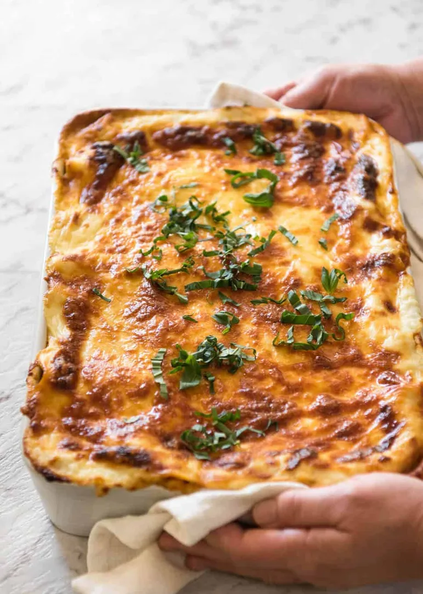

Home
Lasagna Recipe

Description
Lasagna is an italian dish and it is very delicious.
Ingredients
There are 3 components to making lasagna:
- The meat sauce
- The white sauce – creamy and thick, but no cream required!
- Assembling and baking.
What goes in lasagna
The Meat Sauce is basically just like Bolognese. You need:
-
Onion, garlic, carrot and celery – for the flavour base, a soffrito
- Beef
- Canned tomato and tomato paste
- Red wine – for extra flavour!
-
Seasonings – beef bouillon cubes (stock cubes), bay leaves, thyme,
oregano, Worcestershire sauce
For the white sauce, you need
For assembling, you need:
-
lasagna sheets – preferably fresh (from the fridge section of grocery
stores) but dried works just fine too
- cheese!
Steps
- Smear a bit of meat sauce on the base first – stops the lasagna sheets from sliding around;
- Layer 1 – top with meat sauce, bit of white sauce
- Layer 2 – lay out more lasagna sheets, then top with more meat sauce and more white sauce
- Layer 3 – repeat again, lasagna sheets, meat sauce then white sauce; and
- Topping – cover with lasagna sheets, pour over remaining white sauce then sprinkle with cheese.
- Pop it in the oven, and THIS is what comes out….
